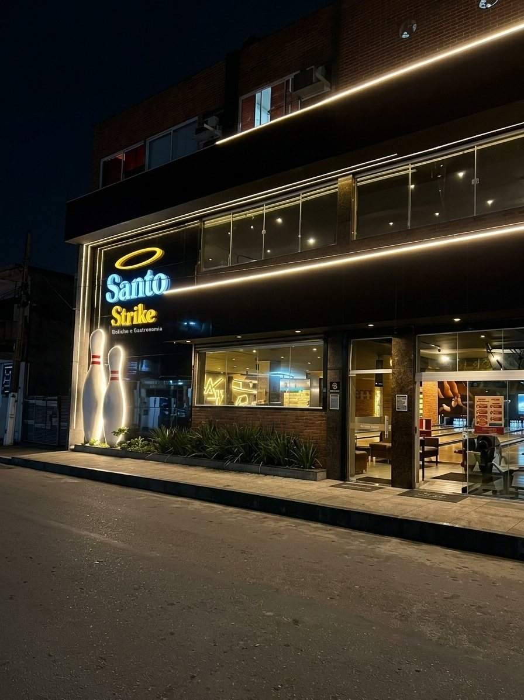
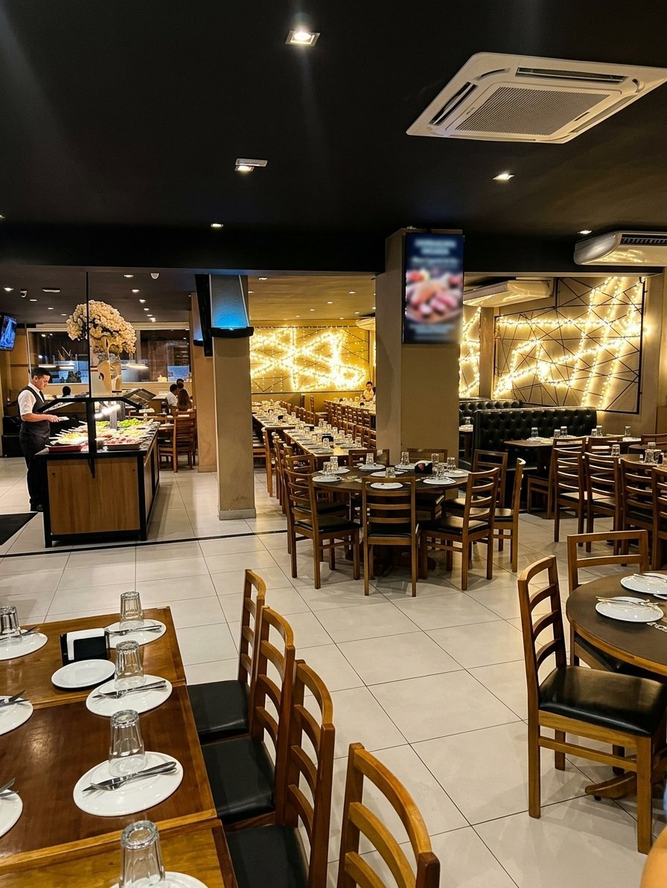
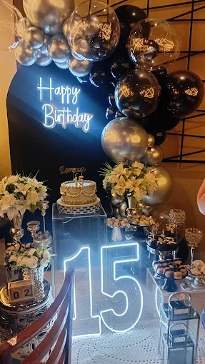

Rodízio
do seu jeito
Escolha entre o rodízio tradicional e o Fusion, com churrasco, além de mais de 20 sabores de pizzas salgadas e doces.
Ver cardápioUMA NOITE FORA DO COMUM
Rodízio de pizzas, buffet caprichado e boliche para transformar qualquer noite em uma boa história.
Reserva pra hoje? Chame no Direct do Instagram
4,7 no GoogleMais de 2.230 avaliações

BOM DEMAIS PRA SER SÓ JANTAR
Uma casa feita para reunir. Escolha seu rodízio, aproveite o buffet e estique a noite com uma partida de boliche — tem diversão para a família inteira.
Conheça a experiênciaEscolha entre o rodízio tradicional e o Fusion, com churrasco, além de mais de 20 sabores de pizzas salgadas e doces.
Ver cardápioBuffet especial e bebidas inclusas para acompanhar cada fatia — e agradar a todos à mesa.
Um gostinho do espaçoBoliche, PlayKids e um espaço pensado para comemorar juntos, em qualquer idade.
Explore nosso espaçoUma noite completaFaixa de preço informada: R$ 60–80 por pessoa
Ver cardápio e valores
UM LUGAR PRA FICAR MAIS UM POUCO
VEM TODO MUNDO
Aniversário, encontro de família ou uma noite sem motivo especial. No Santo Strike, tem espaço para a turma toda — e diversão para os pequenos também.
PlayKidsPara crianças de 6 anos até 1,30 m
Área BabyUm cantinho para crianças de 3 a 5 anos
Mesas na coberturaMais um espaço para curtir a noite
Seu evento, do seu jeitoComemore momentos especiais com a gente
UM PEDACINHO DO SANTO STRIKE
QUEM VEM, RECOMENDA
Uma noite gostosa, atendimento atencioso e motivos de sobra para voltar.
É o que a gente mais gosta de ouvir por aqui.
4,7 de 5 · +2.230 avaliações no GoogleANTES DE VIR
Reunimos algumas informações para ajudar a planejar sua visita. A equipe confirma os detalhes pelo WhatsApp.
Fale com a equipePara consultar a disponibilidade e organizar sua chegada, fale com a equipe pelo WhatsApp antes da visita. Para reservas no mesmo dia, o caminho mais rápido é o Direct do Instagram.
Conte a data, o tamanho do grupo e o tipo de comemoração pelo WhatsApp. A equipe explica as opções e condições para o seu evento.
Na chegada, a equipe orienta sobre a disponibilidade, os valores e o funcionamento da partida. Como esses detalhes podem variar, confirme tudo pelo WhatsApp antes da visita.
A casa conta com espaços pensados para crianças. Consulte a equipe sobre faixa etária, funcionamento e condições de uso.
As opções de estacionamento e as orientações de chegada podem variar. Fale com a equipe para confirmar antes de vir.
Consulte a equipe pelo WhatsApp para confirmar os meios de pagamento aceitos na data da sua visita.
ESTAMOS TE ESPERANDO
R. Beira Linha, 84
Jardim Glória, Duque de Caxias – RJ
CEP 25045-366
Faça sua reserva antes da visita. Chame a gente no WhatsApp para garantir sua mesa ou planejar uma comemoração.
Reservar pelo WhatsApp Reserva pra hoje? Chame no Direct (21) 98879-9699